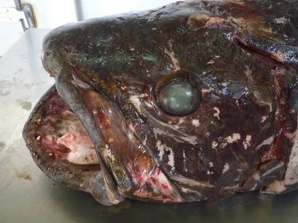

鱼类 · 动物界
西印度洋矛尾鱼 Latimeria chalumnae

被称为“活化石”的肉鳍鱼，1938 年才被科学界重新发现，鳍呈肢状，与四足动物的祖先关系密切。
- 分类
- 门脊索动物门纲肉鳍鱼纲目腔棘鱼目科矛尾鱼科属矛尾鱼属
- 栖息环境
- 水深 100–500 m 的火山岩洞穴和礁壁，昼伏夜出
- 地理分布
- 西印度洋，主要见于科摩罗群岛，也记录于马达加斯加、南非和莫桑比克沿海
- 保护级别
- IUCN 极危（CR）；列入 CITES 附录Ⅰ；中国未列入国家重点保护野生动物名录
物种志
西印度洋矛尾鱼体呈粗壮的纺锤形，体长通常 1.5–1.8 m，最大记录约 2 m，体重常见 60–90 kg。它的鳞片大而坚硬，表面粗糙；第二背鳍、臀鳍和尾鳍连成特有的三段式“矛尾”，中央一叶突出如矛。胸鳍和腹鳍具有肉质的鳍基，内部有骨骼和肌肉，能像四肢一样摆动。体内有一个充满油脂的鳔状器官，帮助它在深水中调节浮力，眼部还有反光层，适应弱光环境。
西印度洋矛尾鱼生活在科摩罗群岛、马达加斯加、南非和莫桑比克沿海水深 100–500 m 的火山岩洞穴中，昼伏夜出，肉食性，捕食鱼类、乌贼和章鱼。它是卵胎生鱼类，幼鱼在雌鱼体内发育，妊娠期估计长达数年，每胎可产数尾至十余尾。1938 年，南非渔民在查卢姆纳河口捕获第一条标本，这种此前被认为已灭绝约 6500 万年的鱼才重新进入科学视野。由于分布范围狭窄、种群数量少，它被IUCN 列为极危，全部矛尾鱼科物种也被列入 CITES 附录Ⅰ。
形态与习性
- 食性肉食性，夜间捕食鱼类、乌贼和章鱼
- 体长通常 1.5–1.8 m，最大记录约 2 m
- 体重常见 60–90 kg
- 栖息深度水深 100–500 m 的火山岩洞穴，昼伏夜出
- 繁殖卵胎生，幼鱼在雌鱼体内发育，每胎数尾至十余尾
- 鳍胸鳍和腹鳍有肉质鳍基，内部具骨骼和肌肉，能像四肢一样摆动
趣味知识
- 1938 年南非博物馆员拉蒂迈在渔获中认出这种鱼，此前它被认为已灭绝 6500 万年。
- 矛尾鱼的鳍内有骨骼和肌肉，能像四肢一样摆动，为研究鱼类登陆提供了线索。
- 它的幼鱼在雌鱼体内孵化，出生时已接近成鱼的形态。